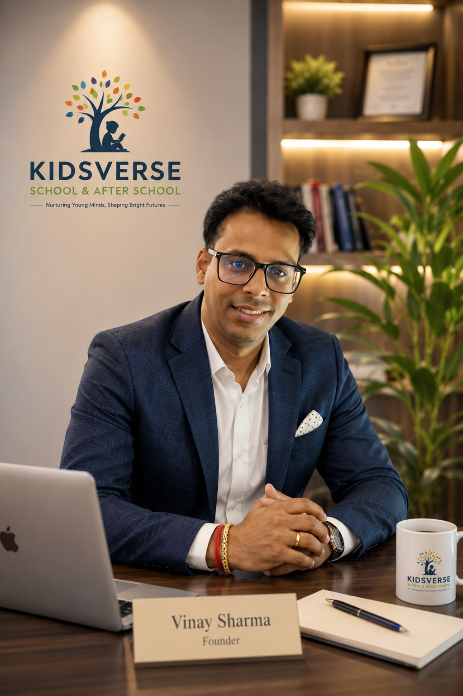

Meet the Founders
We did not start Tivoro to build another tech company.
Built by educators, engineers and problem solvers who believe technology should make better decisions possible.
We started Tivoro because we saw the same problem everywhere.
Parents were overwhelmed with choices. Students were confused about careers and skills. Businesses were investing in websites and marketing without understanding what they actually needed.
Everyone had access to information. Very few had access to the right direction.
Tivoro was created to bridge that gap using technology, artificial intelligence and real-world expertise.
Where Ideas Become Reality
Understand First. Build Second.
15+Years product and systems experience
1000+Learners mentored and guided
3Founders across education, cloud and AI
1Decision-first platform
Technology should never be the first answer. Understanding the problem should be.
Our Philosophy
Understand first. Build second.
Technology should never be the first answer. Understanding the problem should be.
Whether we are helping a child learn better, guiding a parent, or helping a business grow digitally, our approach remains the same: listen, understand, recommend, build and improve.

Co-Founder | Product Vision & Education Innovation
Vinay Sharma
The best technology is not the one with the most features. It is the one that solves the right problem.
For over 15 years, Vinay has worked across some of India's leading technology organizations including UIDAI Aadhaar, TCS and HCL, building large-scale enterprise systems that serve millions of people.
While working in technology, one realization stayed with him: great products do not begin with code. They begin with understanding people.
That belief led to Kidsverse School, where working closely with hundreds of parents and students gave him a front-row seat to the challenges families face while making educational decisions.
At the same time, businesses around him were investing heavily in websites, marketing and software, yet many still struggled to generate meaningful growth because they were solving the wrong problems. That is where the vision for Tivoro was born.
Enterprise systems
Education leadership
AI-powered decisions
Product StrategyAI Product DesignEducation InnovationDigital TransformationUser ExperienceEnterprise ArchitectureGrowth Systems
Co-Founder | Engineering & Cloud Platform
Sukhjeevan Singh
Scalable technology is not built by adding complexity. It is built by removing it.
Sukhjeevan is a Senior Software Engineer with more than five years of experience designing cloud-native software and enterprise data platforms.
His expertise spans backend engineering, distributed systems, Azure cloud technologies and modern data engineering.
Throughout his career he has built production-grade APIs, scalable microservices and high-performance data pipelines that process critical business information reliably and efficiently.
At Tivoro he leads platform engineering, ensuring every recommendation engine, AI workflow and digital product is built on a foundation that is secure, scalable and future-ready.
Cloud systems
Reliable APIs
Future-ready platform
Cloud EngineeringMicrosoft AzurePythonData EngineeringPlatform ArchitectureDevOpsAI Infrastructure
Co-Founder | Artificial Intelligence & Product Intelligence
Prakhar
Technology creates value only when you understand the problem underneath the request.
For the past five years, Prakhar has been building AI-powered enterprise products for the banking industry.
His work includes customer intelligence platforms, CRM systems, agentic workflows and enterprise AI solutions used by large financial institutions.
Working deeply with LangChain, Retrieval-Augmented Generation, PostgreSQL, Redis and event-driven architectures taught him something more important than technology itself: every customer asks for a solution, but very few understand the actual problem.
That philosophy shapes every AI experience inside Tivoro, from student learning paths to parent guidance and business growth recommendations.
Having mentored over 1,000 learners worldwide through hands-on software projects, he strongly advocates project-based learning over passive instruction.
Enterprise AI
Product intelligence
Project-based learning
Artificial IntelligenceGenerative AILangChainAgentic AIProduct IntelligenceBackend SystemsLearning Experience Design
Why We Built Tivoro
Most platforms ask what you want to buy. We ask what you are trying to achieve.
That single difference changes everything.
Personalized learning guidance instead of generic recommendations.
Career roadmaps, live projects and skill direction instead of random courses.
Growth strategy before predefined website packages.
Clearer decisions before spending time, money or effort.
Our Vision
To build the world's most trusted AI-powered decision platform.
Our goal is to help parents, students and businesses discover, plan and achieve their next milestone with clarity and confidence.
Every great future begins with one good decision.
At Tivoro, we are building more than software.
We are building a platform that helps people make those decisions with clarity, confidence and purpose.